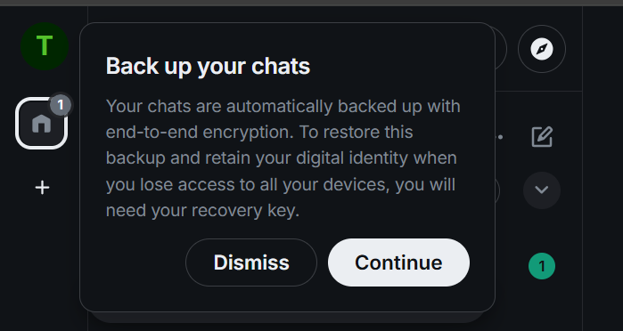
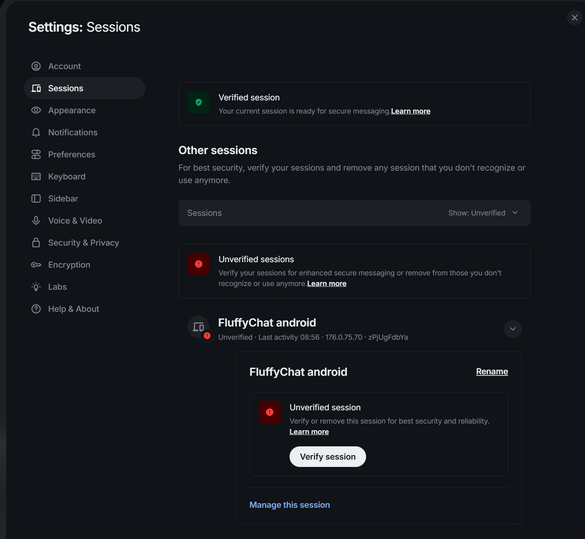
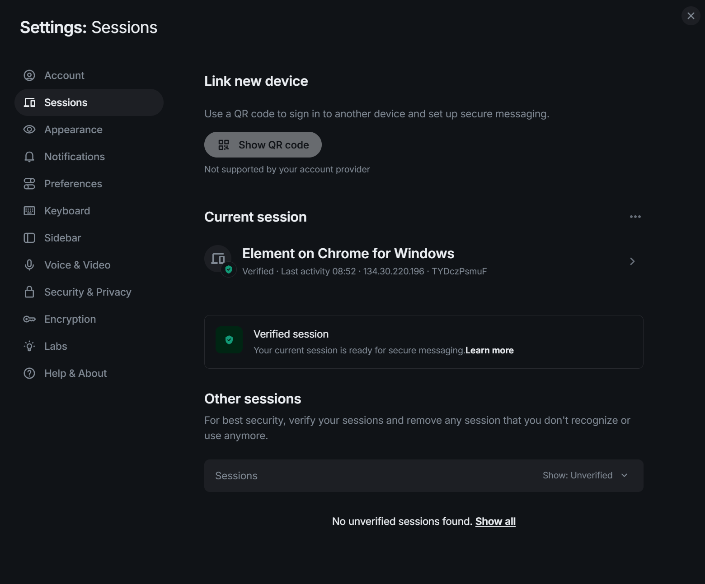
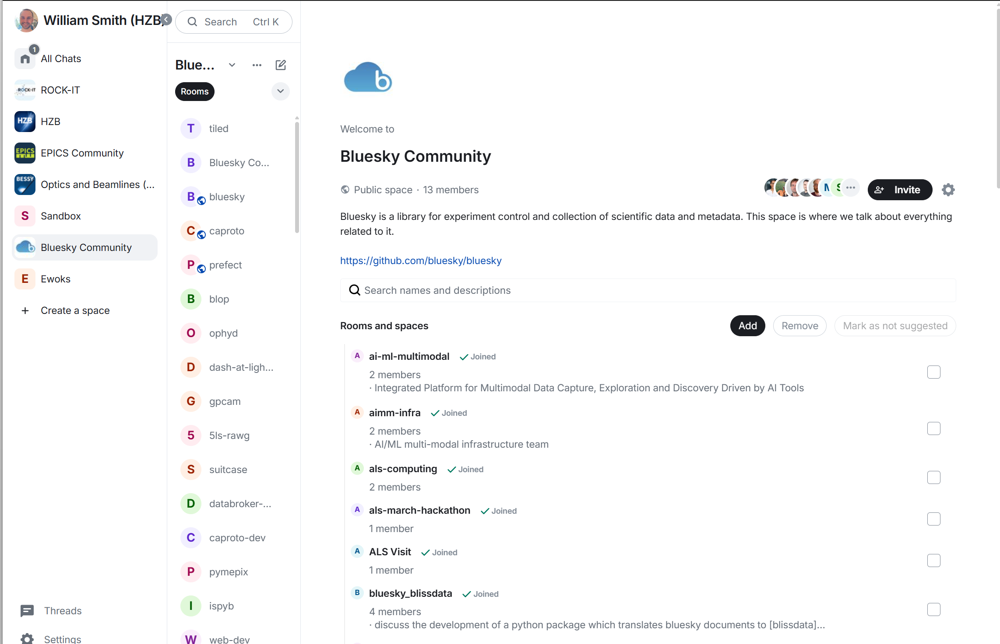
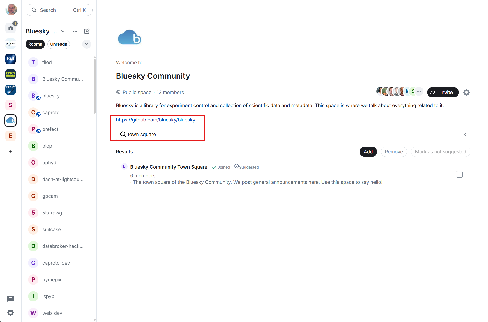

Join the Bluesky Community Chat on Matrix
This page explains how to join the Bluesky community chat on Matrix. For background on Matrix, see the Matrix introduction for instant messaging.
1. Make a Matrix account on a homeserver
- Users who already have an account with a homeserver like
matrix.orgorepics-controls.orgcan skip to step 2. - To make a new account, use
matrix.organd authenticate with a Google or GitHub account. Register using Element. - Once registered, use any Matrix client to log in. Save any recovery keys when prompted.

- It is optional, but helpful, to sign in on another device with the same client or a different one. One option is to use the FluffyChat app, which is available on both Android and Apple devices.
- Once logged in on both devices, go to settings in the Element web client, go to Sessions, then find the session started on the other device and verify it.

- Confirm that the emojis shown on both devices match. Once complete, the other session is shown as verified.

- The Matrix account is now set up. If a second device was added, both sessions are verified.
2. Join the Bluesky Community Space
Open this link: https://matrix.to/#/#bluesky-community:helmholtz.cloud.
Please note, this space is not searchable in the public space registry. It is only available through this invite link.
The link opens the space landing page. From there, choose any relevant rooms to join.

3. Say hello on the Town Square
Please join the Town Square room.

Post a short introduction in the room.